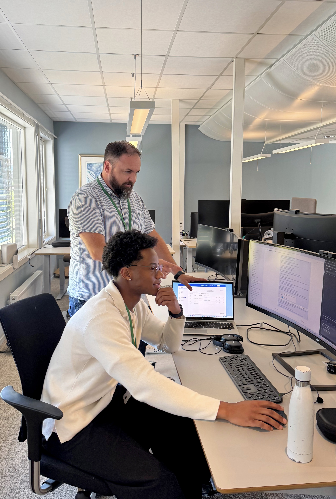

Rollen min
Avklart hva jeg skal gjøre i prosjektet.
Fra første dag og onboarding til å programmere på ekte.
Avklart hva jeg skal gjøre i prosjektet.
Innføring i Nkoms samfunnsrolle.
Hvordan tjenestene henger sammen.
Verktøy og tilganger i et strengt sikkerhetsregime.
Alle avdelinger må jobbe mot felles mål, selv med ulike oppgaver.
Programmerer skikkelig, med DevOps i arbeidsflyten.
Lært å koble til og bruke dem.
Claude som hjelp til koding og problemløsning.
Det tok tid å komme i gang, men ga god forståelse for hvor seriøst Nkom tar informasjonssikkerhet.
Spennende å se hvordan et lite utviklingsteam påvirker en hel etat, og hvordan teknologi og regelverk henger sammen.
